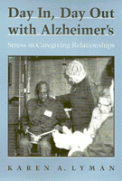

Strategies that serve both providers and patients
Strategies that serve both providers and patients


 Strategies that serve both providers and patients
Strategies that serve both providers and patients

|  |
Day In, Day Out with Alzheimer'sStress in Caregiving RelationshipsKaren A. Lymanpaper EAN: 978-1-56639-098-9 (ISBN: 1-56639-098-2) |
"...an insightful and constructive view of persons with dementia and their caregivers."
—Carroll L. Estes, Institute for Health & Aging, University of California, San Francisco
Stress for care providers and distress for clients with varying degrees of dementia—these are the dynamics Karen A. Lyman discovered in her study of eight Alzheimer's day care centers in California. Speaking as an advocate for both day care providers and people with Alzheimer's disease, the author presents a model of "what works" in Alzheimer's care.
Many strategies developed by caregivers are self-defeating, Lyman found. Drawing on personal reflections, interviews, and anecdotes, she demonstrates how caregivers' struggle to maintain order through often unnecessary control contributed to patients' increased sense of self-doubt, anxiety, and incompetence. Negative expectations by caregivers brought on depression and rapid intellectual decline in patients, a "sense of hopelessness" that has been called "therapeutic nihilism."
Lyman identifies unsupportive institutional policies, restrictive environments, and poorly organized programs as chronic sources of stress. The alternatives she offers meet caregivers' needs and permit clients a degree of self-determination and identity. Her model for care will be of great interest to gerontological professionals, policy makers, and family members dealing with victims of Alzheimer's disease.
"[A]n insightful, comprehensive analysis of the unique reciprocal relationship between people with Alzheimer's disease and people who care for them. The author's compassionate concern emphasizes the need for innovative methods of care which alleviate stress for the care-giver and distress for the patients...an important book for policy makers, health care administrators, medical and nursing students, and all others who care."
—Maggie Kuhn, Founder and National Convener of the Gray Panthers
Preface
Acknowledgments
1. An Introduction to Dementia and Caregiving
The World of Dementia Care •
Care as Control •
The Medicalization of Senility: A Historical Shift •
The Biomedical Model of Dementia •
A Socioenvironmental Model of Dementia Care •
Conclusion
2. Losing It: Stress and Distress in Alzheimer's Day Care
Energy: Demanding Work •
Losing People: Losing Control •
We/They: Social Support •
The Caregiving Relationship •
The Price of Stress: Quality of Care •
Conclusion
3. Care and Control: Managing Stress by Medicalizing Deviance
Assessing "Level of Severity" •
Infantilization: The Medical Model of Care •
Social Control •
Social Distance •
Staff Stress and Quality of Care in a Nonmedical Program •
Conclusion
4. Medicalization, Stress, and Care: Contrasts between Two Day Care Centers
Medial and Nonmedical Programs: Structural Conditions •
The Medical Model of Caregiving •
Contrasts in Work-Related Stress •
Contrasts in Quality of Care •
Conclusion
5. The Physical World of Day Care: Environmental Stress and Control
Environmental Stress: Four Facility Design Features •
Environmental Control and Medicalizing Deviance •
Facility Design and Staff Stress: A Case Study •
Conclusion
6. What Worked: Providing Quality Care with Minimal Staff Stress
A Model Program at Valley Day Care Center •
Conclusion
7. What's Next: Research, Practice, and Policy Implications
Research Implications •
Practice Implications •
Policy Implications •
Conclusion
Appendix A: Research Methods and Researcher Role
Appendix B: Tables
Notes
References
Index
Karen A. Lyman is Professor of Sociology and Coordinator of the Gerontology Program at Chaffey College in California. She publishes widely and in 1991 received the American Sociological Association Outstanding Medical Sociology Dissertation Award.
Health, Society, and Policy, edited by Sheryl Ruzek and Irving Kenneth Zola.
No longer active.
Health, Society and Policy, edited by Sheryl Ruzek and Irving Kenneth Zola, takes a critical stance with regard to health policy and medical practice, ranging broadly in subject matter. Backlist titles include books on the legal and professional status of midwifery, the experience and regulation of kidney transplants, the evolution of federal law on architectural access, and a political/ethical argument for making the community responsible for universal access to health care.
© 2015 Temple University. All Rights Reserved. This page: http://www.temple.edu/tempress/titles/851_reg.html.